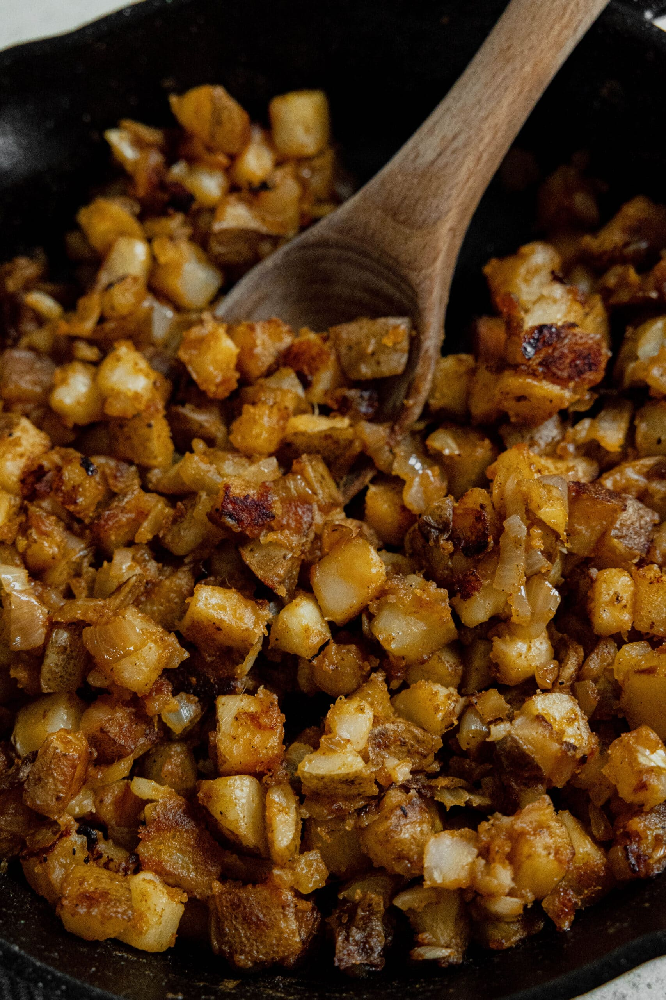

Bri's Home Fries

Description
A savory classic with a kick, these home fries with an unexpected ingredient are always a hit.
Ingredients
- 5 Yukon Potatoes
- Paprika
- Garlic Powder
- Secret Ingredient (Shhhh)
Steps
- Heat 2-3 tbsp oil in a frying pan over medium-high heat.
- Finely dice all potatoes and add to a large bowl.
- Mix salt, pepper, and garic powder to taste in a separate bowl. Add 1-2 tbsp Paprika and a small dash of the Secret Ingredient.
- Evenly coat potatoes with seasoning and add to frying pan.
- Let cook 10 minutes or until thoroughly soft, stirring occasionally.